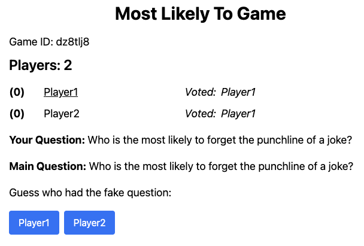

Xavier Rao
I'm currently a third year student at RIT pursuing a BS in Software Engineering. I'm currently seeking a Spring or Sping/Summer 2026 co-op.
My Projects
-
Most Likely To Game
Everyone gets a question. Is your question the same as everyone else or are you the imposter? Vote to answer your question. Once everyone votes, you get to see how everyone else voted and what the main question was. Discuss and try to find who the imposter is.
Made with:
 -
Infinite Tic Tac Toe
In this game, like Tic-Tac-Toe, you need to get 3 marks in a line (horizontally, vertically, or diagonally). However, you can only have 3 marks on the grid at a time. When you place your 4th mark, your 1st mark disappears, and so on. You can't place your 4th mark where your 1st mark was. After each player has placed 3 marks, one mark will turn red to show it will disappear. This continues until the game ends.
Made with:
-
Cat Rescue
A charity website for abandoned cats in the Rochester area. Here, you're able to help fund food, toys, and various other supplies. If you're unsure about what to fund, you can look at the statistics page to see how many of each item has been funded. After you add items to your basket and checkout, your order will be processed. If you're an admin, you can log in to add or update these items, as well as send out notifications to all the users.
Made with: